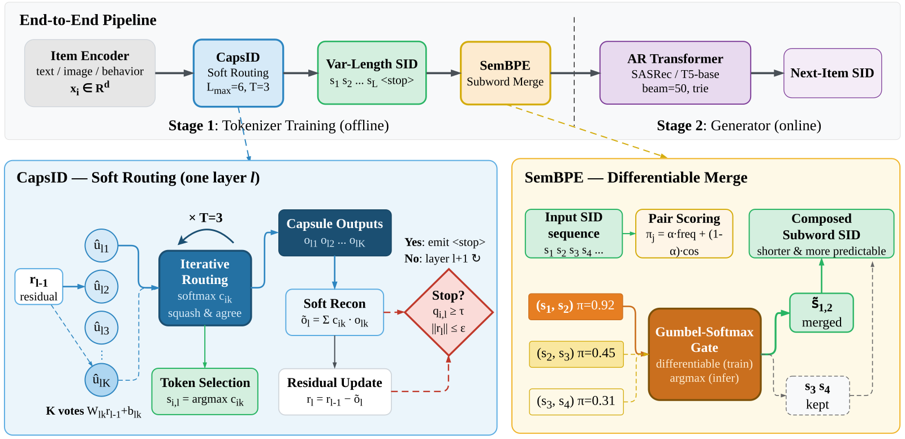
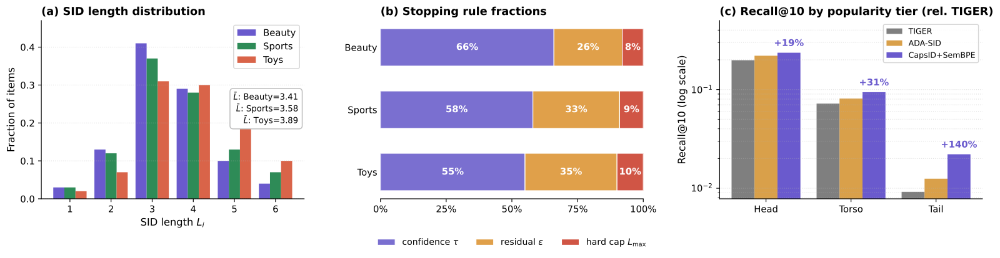
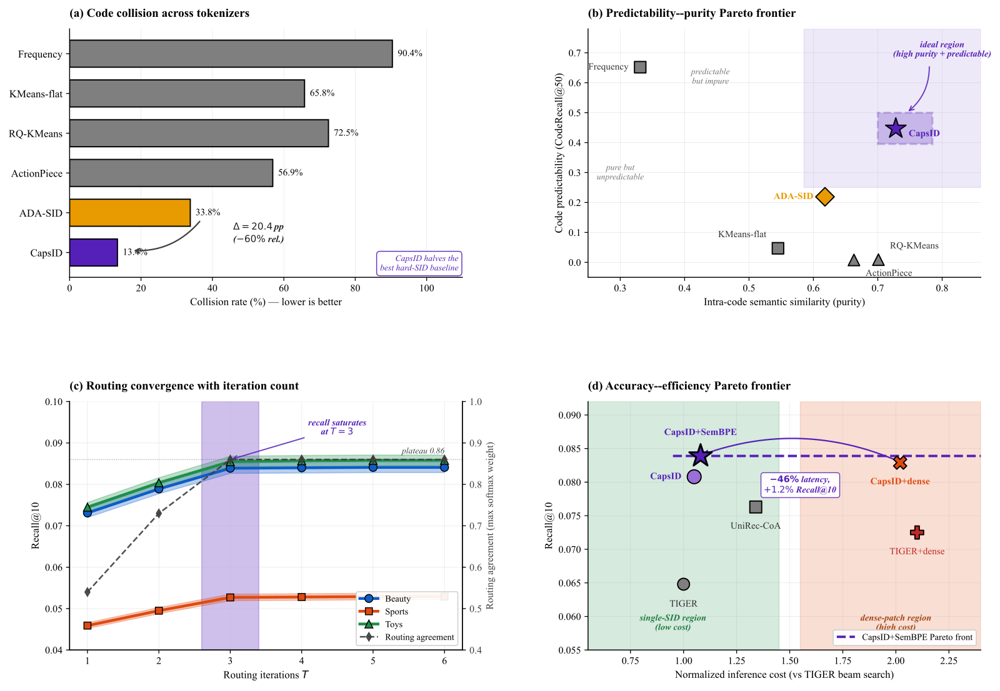

目录 · 10 节
1它到底在解决什么问题？2流程总览3胶囊路由：一层里怎样选码4软残差：减去的是加权重建5变长编号：什么时候停6SemanticBPE：把常一起出现的相邻编号合成一个7实验结果8我认为它的局限9一个生成式推荐团队可以怎么试10评价做生成式推荐的团队值得读这篇，因为它把常见的补丁思路反过来了：别人在编号后面再接一个稠密向量来补信息，它直接改造生成编号的那一步，补回的信息几乎不增加线上检索成本。核心思想一句话：每一层不再只认一个最近的码，而是让物品按权重分给几个候选码，残差减去的是这几个码的加权重建；这一层的把握够高就提前停，所以每个物品的编号长短不一。在亚马逊 Beauty 上，Recall@10 从最强单编号基线的 0.0770 提到 0.0839，相对提升 8.9%；编号冲突率降到 13.4%；在 3,580 万物品的工业数据上，召回和带稠密向量的方案持平略好，在同一套检索设施上测的端到端推理延迟只有后者的 51%。
它到底在解决什么问题？
生成式推荐里，每个物品先被编成一串 SID，模型逐位生成下一个物品的 SID。SID 通常用残差量化来做：第一层在码本里找离物品向量最近的码，减掉它，剩下的残差交给第二层再找最近的码，如此重复。每一层都是“只认最近的一个”。
论文认为瓶颈就在这一步。看一个示意场景：一个“旅行炊具套装”，既像旅行用品，也像厨具。第一层只能二选一，假设选了“旅行”，“厨具”这部分信息就全部留进残差，后面几层要用很少的位数去补，补得不好，误差还会一路往后传。
现有的补法有两类：
| 路线 | 做法 | 代价 |
|---|---|---|
| 打补丁 | 编号后面再接一个稠密向量，或在编号前加属性前缀 | 稠密向量要多一条向量检索和分数融合，Beauty 上推理延迟是 TIGER 的 2.10 倍；属性前缀（UniRec-CoA）是 1.34 倍 |
| 改编号器 | 改进编号本身，让编号多保留信息 | 以往的方法都保留了“每层只认最近的一个”这一步 |
这篇属于第二类，而且改的正是以往方法都没动的那一步。第一类的代表是 COBRA（在稀疏编号后再级联一个稠密向量的方案），后文主要拿它做对照。
流程总览

| 步骤 | 输入 | 输出 |
|---|---|---|
| 1. 物品向量 | 文本、图片、行为等特征 | 一个归一化的向量（公开数据上 128 维） |
| 2. CapsID 逐层编号 | 当前残差 | 每层一个编号，加权重建后更新残差，满足条件就停，最多 6 层 |
| 3. SemanticBPE 合并 | 一个物品的编号序列 | 把常一起出现、语义又相近的相邻编号合成一个新编号 |
| 4. 生成器 | 用户最近 50 个物品的编号序列 | 下一个物品的编号，束宽 50，前缀树过滤无效编号 |
第 2、3 步离线完成，线上只看到普通的离散编号，所以约束解码这些现成设施都能直接用。
胶囊路由：一层里怎样选码
论文用的词是“胶囊”，大白话说，就是这一层的一个候选码，但它不是一个固定的中心点，而是一套自己的线性变换。每层有 256 个胶囊。当前残差经过每个胶囊的变换，得到这个胶囊的一张“选票”向量。
接下来是几轮协商。第一轮所有胶囊权重相同，按权重把选票加起来，再经过一个压缩函数 squash，得到这一轮的共识。squash 的公式是 ：方向不变，长度压到 0 到 1 之间，原来越长就越接近 1。然后每个胶囊用自己的选票和共识做内积，把内积累加到自己的路由分上（路由分从 0 开始，每轮都累加），下一轮对所有胶囊的路由分做 softmax，得到新的权重。默认协商 3 轮，最后权重最大的胶囊就是这一层的编号。
手算一个两维的示意例子：胶囊 A 的选票是 (1, 0)，胶囊 B 的选票是 (0, 0.8)。
| 轮次 | A 的权重 | B 的权重 | 这一轮共识的长度 |
|---|---|---|---|
| 1 | 0.500 | 0.500 | 0.451 |
| 2 | 0.532 | 0.468 | 0.458 |
| 3 | 0.572 | 0.428 | 0.471 |
所以编号选 A，但 B 还保留了约 43% 的权重。这意味着协商会把权重慢慢推向更有说服力的选票，却不会一步变成“赢家通吃”，第二个侧面的信息留了下来，后面的残差更新会用到它。
协商轮数很关键：只做 1 轮，Recall@10 从 0.0839 掉到 0.0731，降 12.9%；2 轮 0.0789；3 轮之后基本饱和，5 轮是 0.0841。这说明第一轮之后的修正确实在纠正选择，而不是摆设。
软残差：减去的是加权重建
这是全文和普通残差量化差别最大的地方。普通做法只减去赢家的码；CapsID 减去的是所有胶囊输出按最终权重的加权和。这里的“胶囊输出”不是上面那一轮的共识，而是把每个胶囊自己的选票单独过一遍 squash 得到的向量，和协商进行到第几轮无关；权重则用协商最后一轮的结果。论文的理论分析里另有“码本中心”，但没有定义胶囊中心如何由胶囊变换产生，只是假设胶囊输出离对应中心不远。
还是用示意数字手算：残差是 (0.6, 0.4)，第一维代表“旅行”，第二维代表“厨具”。胶囊 A 的输出是 (0.6, 0)，胶囊 B 的输出是 (0, 0.5)。
- 只减赢家 A：剩下 (0, 0.4)，长度 0.40，“厨具”部分原封不动留给下一层。
- 按权重 0.6 和 0.4 减：剩下 (0.24, 0.2)，长度约 0.31，两个侧面都被解释掉一部分。
所以边界物品不必在“旅行”和“厨具”之间二选一，下一层看到的误差也更小。消融里把软残差换回只减赢家，Recall@10 降 16.3%。表里固定 2 位降得更多（21.6%），但那是砍长度；在改分配方式的几项里，这一项最重。论文据此认为，收益来自分配方式本身，而不是码本初始化或监督方式。
减法并不保证残差一定变小。论文附录给出了残差范数下降的条件，并说这个条件靠重建损失和对选票归一化来促成，训练时会监控让残差变大的比例，但报告的实验都没有启用缩小步长的补救。
复现时还有一处要自己补：物品向量是 128 维，胶囊输出是 64 维，公式里直接用前者减后者。论文没有说明 128 维的残差与 64 维的胶囊输出通过什么映射对齐后才能相减，要自己定一个做法。
变长编号：什么时候停
为什么要变长？固定长度给简单物品和模糊物品同样多的位数，简单的被过度编码，复杂的又不够用。
每一层算一个置信度：赢家胶囊的权重乘以共识的长度。满足三个条件之一就停：置信度不低于 0.82；剩余残差长度不超过 0.08；已经到第 6 层。
手算一下置信度：赢家权重 0.9，共识向量压缩前长度为 2，压缩后长度是 4 / 4.5 ≈ 0.889，置信度约 0.80，低于 0.82，继续下一层；如果压缩前长度为 3，压缩后约 0.947，置信度约 0.85，就停。这意味着要靠置信度提前停，“权重集中”和“共识够强”必须同时成立，光是一家独大但选票本身很弱还不够。另一条路是剩余残差已经够小，这时即使置信度不高也会停。
实际停止原因的分布（图 2）：置信度触发的占 55% 到 66%，残差触发的占 25% 到 35%，碰到 6 层上限的只有 8% 到 10%。平均长度在 3.41（Beauty）到 3.89（Toys）之间，最常见的是 3 位。这说明长短主要由模型自己决定，上限只是兜底。

变长会带来一个解码问题：短编号可能是长编号的前缀。论文的处理是每条有效路径末尾都加一个“物品结束”标记，生成只能停在对应真实物品的节点上。但变长只解决了前缀歧义，不解决冲突：论文没有说明多个物品共享同一条完整编号时，怎样从同一条结束路径确定并排序最终返回的物品。Beauty 上冲突率还有 13.4%，这一步要自己定规则。
阈值的敏感性也说明了这个设计的取舍：置信度阈值降到 0.75，平均长度变成 2.8，Recall@10 是 0.0817；升到 0.90，平均长度 4.4，Recall@10 是 0.0821，两头都不如默认的 0.0839。消融里固定 2 位降 21.6%，固定 4 位降 8.8%。
SemanticBPE：把常一起出现的相邻编号合成一个
CapsID 之后，还有一步借鉴了文本分词里的 BPE。对每对相邻编号，打分是 乘以归一化后的相邻对出现频率，加上 乘以两个编号词向量 的余弦相似度，。论文没有说明 SemanticBPE 的编号词向量 如何产生，也没说它和胶囊输出、码本中心是什么对应关系。候选对还要满足两个硬条件：训练集中至少出现 20 次，相似度高于一个阈值，这个阈值在训练中从 0.90 逐步放宽到 0.55。打分和硬条件负责筛出候选对，真正的合并决定交给一个两层 MLP：它的输入是两个编号的词向量、归一化频率和余弦相似度拼在一起，也就是打分里的两项都作为特征喂进去；输出“合并”和“不合并”两类的概率。训练时用 Gumbel-Softmax 让这个决定可导，推理时合并概率大于不合并概率就合并；一对合并了，同一遍里碰到这两个编号的其他对都跳过。论文没有说明合并出的新编号的向量和频率怎样构建，也没说它是否继续参加后续轮次的合并。
为什么要加语义项？只按频率合并，会把很热门、但语义宽泛的前缀对合在一起，放大热门偏差。消融里去掉 SemanticBPE，Recall@10 是 0.0808；换成只看频率的 BPE 是 0.0817；完整版是 0.0839。也就是说，只按频率合并比不合并多 0.0009，加上语义项再多 0.0022（我按表格算的），合并带来的收益大部分是语义项给的。在工业数据上，合并后平均编号长度从 3.8 降到 3.3。
为了不让生成器去追一个一直在变的目标，训练分成两个阶段。第一阶段只训编号器（含合并 MLP），生成器不参与。用的是编号器这一侧的几项损失，最主要的是重建损失，即物品向量和重建向量之差的平方；长度项则直接惩罚平均编号长度。对重建损失这一项，论文没有说明其中的重建向量用的是软加权重建还是由离散编号得到的硬重建，argmax 和提前停止的梯度怎样传也没写。第二阶段冻结胶囊中心和合并 MLP 的权重，训练生成器，同时只放开两处少量参数随生成器一起训练：胶囊路由带一组秩为 8 的低秩适配参数，让路由能随下游监督小幅调整；合并门上加一个可学习的标量偏置，用来整体调高或调低合并倾向。论文没有说明适配引起编号变化时，训练目标和离散索引怎样同步，复现时要自己决定多久重新生成一次。
实验结果
主表对比的基线里，TIGER（最早用残差量化做编号的生成式推荐方法）是起点，ReSID（用推荐场景自己学到的物品表示来做量化的方法）是论文认定的最强单编号基线。Recall@10，三次随机种子的平均：
| 方法 | Beauty | Sports | Toys |
|---|---|---|---|
| TIGER | 0.0648 | 0.0400 | 0.0712 |
| ReSID | 0.0770 | 0.0475 | 0.0786 |
| COBRA（加稠密向量） | 0.0725 | 0.0434 | 0.0781 |
| CapsID | 0.0808 | 0.0507 | 0.0803 |
| CapsID + SemanticBPE | 0.0839 | 0.0527 | 0.0855 |
相对 ReSID，完整方法在三个数据集上分别提升 8.9%、11.0%、8.8%，平均 9.6%。这说明只改编号器，就能超过需要额外稠密向量的方案。
“还需不需要补丁”这个问题，论文在 Beauty 上专门做了对比。成本指推理延迟，以 TIGER 束宽 50 的束搜索为 1 倍：
| 配置 | Recall@10 | 推理成本 |
|---|---|---|
| TIGER | 0.0648 | 1.00 倍 |
| TIGER 加稠密向量 | 0.0725 | 2.10 倍 |
| UniRec-CoA（加属性前缀） | 0.0763 | 1.34 倍 |
| CapsID | 0.0808 | 1.05 倍 |
| CapsID 加稠密向量 | 0.0829 | 2.14 倍 |
| CapsID + SemanticBPE | 0.0839 | 1.08 倍 |
给 TIGER 加稠密向量能涨 11.9%，给 CapsID 加只涨 2.6%，成本却翻倍。这说明编号本身保留的信息越多，稠密补丁的边际价值越小。
编号质量方面，CapsID 在 Beauty 上的冲突率（没拿到唯一编号的物品比例）是 13.4%，ADA-SID（另一种变长编号方法）是 33.8%，RQ-KMeans 残差量化是 72.5%。长尾物品的 Recall@10 从 TIGER 的 0.0092 提到 0.0221，热门物品只提升 19%，这说明软分配对落在类别边界的冷门物品帮助最大。冷启动子集指训练集里交互少于 5 次的物品。把这个子集上的 Recall@10 除以全量测试的 Recall@10，CapsID 是 73%，TIGER 是 57%。

工业数据（860 万用户、3,580 万物品、3.311 亿次交互，单次运行）：
| 方法 | Recall@100 | NDCG@100 | 冲突率 | 平均长度 |
|---|---|---|---|---|
| TIGER | 0.2843 | 0.1482 | 51.4% | 4.00 |
| ReSID | 0.3105 | 0.1836 | 31.8% | 4.00 |
| COBRA（加稠密向量） | 0.3275 | 0.1935 | 51.4% | 4.00 加向量 |
| CapsID | 0.3286 | 0.1943 | 22.1% | 3.8 |
| CapsID + SemanticBPE | 0.3356 | 0.1974 | 19.4% | 3.3 |
完整方法比 COBRA 的 Recall@100 高 2.5%（我按表格算的），延迟只有它的 51%。但按热度拆开，在热门物品上反而比 COBRA 低 3.2%，在长尾上高 25.4%。这说明稠密向量对热门物品仍有用，编号器的优势集中在长尾。
我认为它的局限
第一，实验可信度有几处需要留意。工业结果只跑了一次，也没有线上对照实验。附录里的实现说明写着“在真实实验中，我们将报告停止原因的分布”和“在预期的公平设置下”，读起来像实验前写的计划，和正文已报告的结果放在一起，读者不容易判断哪些设置真正用在了报告的数字里。
第二，机制有缺口，复现会卡住。上面提到的维度对齐、重建损失的算法、第二阶段编号会不会变、合并出的新编号怎么表示、冲突物品怎么返回，都要自己补。“胶囊中心”只在理论分析和生成器初始化里出现，正文给的却是每个胶囊的一套线性变换，两者怎么对应也要自己推断。这些都影响能否照着论文复现出 13.4% 的冲突率。
第三，工程上有实打实的成本。编号器训练比残差量化贵 20% 到 30%；每层胶囊数固定（公开数据 256，工业 1024），物品库增长后要扩容或定期重建，而重建编号意味着生成器也要重训。热门物品上还落后带稠密向量的方案 3.2%，对以热门流量为主的场景，收益可能比平均数小。
一个生成式推荐团队可以怎么试
- 先做诊断：统计现有编号的冲突率、长尾物品的召回，以及第一位编号的预测命中率。如果冲突率高、长尾召回明显差，说明编号器是瓶颈。
- 只换编号器做离线对比：在同一份物品向量上，把残差量化换成软分配加软残差，固定 4 位，先确认软残差本身的收益。补上维度对齐时，记下自己的做法。
- 再加变长：从论文的阈值（0.82、0.08、6 层）起步，检查停止原因分布和平均长度，确认前缀树里已加上物品结束标记。
- 最后试 SemanticBPE，对比只按频率合并的版本，重点看热门偏差有没有变化。
- 热门物品单独看指标，如果落后于现有带向量的方案，考虑只在长尾流量上切换。
评价
| 维度 | 评价 |
|---|---|
| 问题重要性 | 高。编号器的信息损失是生成式推荐公认的瓶颈 |
| 方法创新性 | 中高。把胶囊路由用到编号、用加权重建更新残差、用置信度决定长度，组合起来是新的 |
| 实验证据 | 中。公开数据有三次种子和显著性检验，消融完整；但工业只有单次运行、没有线上实验，附录还有像计划的措辞 |
| 工程成本 | 中。线上和普通编号方案几乎一样，离线编号器训练贵 20% 到 30%，物品库变化后要重建 |
| 是否值得尝试 | 值得先离线试软残差这一步，它的收益最大、改动最集中；变长和 SemanticBPE 视长尾占比再定 |
读完这篇，你觉得
夜读鸮记下了，谢谢你的反馈。
点一下即可，无需登录；再点一次撤回。只统计匿名次数，不记录你是谁。
讨论
欢迎补充实验细节、复现经验或不同看法。需 GitHub 登录。
正在加载讨论…